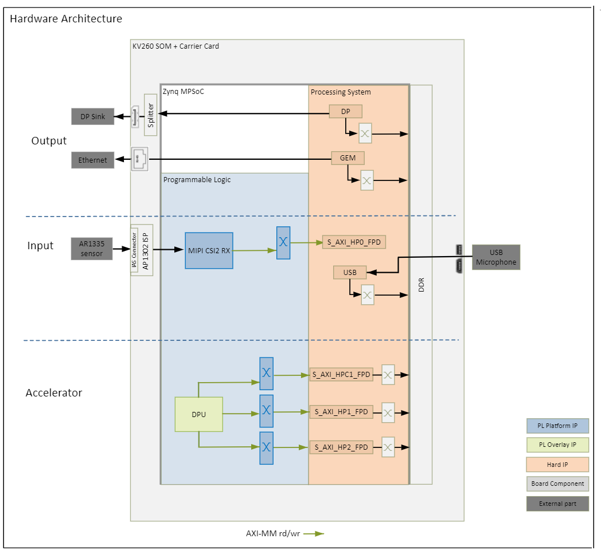
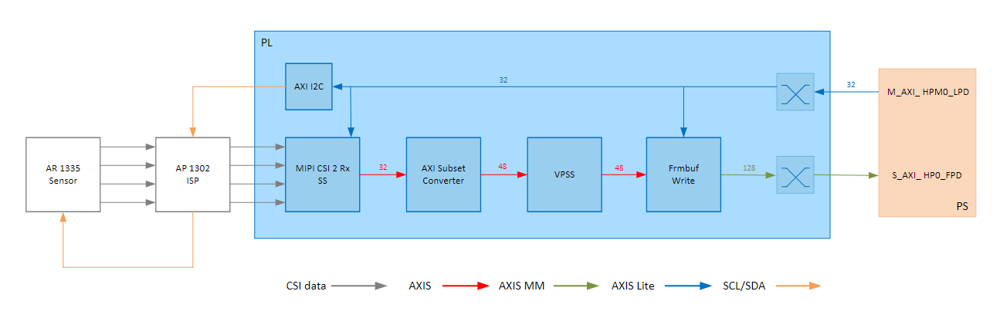

Kria™ K260 SOM Starter Kit NLP SmartVision Tutorial |
Hardware Architecture of the Platform |
Hardware Architecture of the Platform¶
Introduction¶
This section describes the design implemented in Programmable Logic (PL). The following figure shows the top level hardware architecture of the reference design.

At a high level, the design comprises of four pipelines
Capture/Input pipeline: This comprises of pipelines through which audio/video data are captured.
USB Audio capture pipeline (PS)
MIPI CSI-2 capture pipeline (PL)
Display/Output pipeline: This comprises of pipelines through which audio/video data are outputted.
Display Port pipeline (PS)
Ethernet pipeline (PS)
Accelerator pipeline : This comprises of overlay accelerator functions integrated into the platform using Vitis.
The Deep Learning Processing Unit (DPU) IP runs different Neural Network models (PL)
Note: The PS interconnects in the figure are conceptual.
Capture¶
Single Sensor MIPI Capture¶
A capture pipeline receives video frames from an external source and writes it into memory. The single sensor MIPI CSI-2 receiver capture pipeline is shown in the following figure.

This pipeline consists of five components, of which two are controlled by the APU via an AXI-Lite based register interface; one is controlled by the APU via an I2C register interface, and one is configured statically.
The On Semi AR1335 is a CMOS active pixel image sensor with a pixel array of 4208H x 3120V. It sends sensor data to the ISP through a 4-lane MIPI interface. It is controlled and programmed by the ISP via a two-wire serial interface. The sensor is connected to the IAS 0 module connector on the ML carrier card. For more information refer to the datasheet from https://www.onsemi.com/products/sensors/image-sensors-processors/image-sensors/ar1335
The On Semi AP1302 ISP is a Image signal processor digital image sensor supporting image resolutions up to 4224x 3156V. AP1302 interfaces to CMOS imaging sensors and performs all the necessary operations required to capture video streams. It performs functions like Auto White Balancing (AWB), Auto Exposure (AE), Auto Focus (AF) etc. The ISP is controlled via an I2C interface using an AXI I2C controller in the PL. It is mounted on a ML carrier card and has a MIPI output interface that is connected to the MIPI CSI-2 RX subsystem inside the PL. A GPIO is used to reset the IP. For more information refer to the datasheet from https://www.onsemi.com/products/sensors/image-sensors-processors/image-processors/ap1302
The MIPI CSI-2 receiver subsystem (CSI Rx) includes a MIPI D-PHY core that connects four data lanes and one clock lane to the ISP. It implements a CSI-2 receive interface according to the MIPI CSI-2 standard v2.0 with underlying MIPI D-PHY standard v1.2. The subsystem captures images from the ISP in YUV 4:2:2 format and outputs AXI4-Stream video data. At one pixels per clock (ppc) and 10 bits per pixel, the AXIS width is 24 bits. For more information see the MIPI CSI-2 Receiver Subsystem Product Guide (PG232).
The AXI subset converter, see AXI4-Stream Infrastructure IP Suite LogiCORE IP Product Guide (PG085), is a statically-configured IP core that converts the 16 bit AXI4-Stream input data to 24 bit AXI4-Stream output data by adding zeros to the MSB of each data word. At pne ppc, the AXIS width is 24 bits.
The video processing subsystem is configured in scalar mode. It takes YUV 4:2:2 AXI4-Stream input data and converts it to RGB format.
The video frame buffer takes RGB input data and converts it to AXI4-MM format which is written to memory in RGB format. The AXI-MM interface is connected to the S_AXI port of the PS.
For each video frame transfer, an interrupt is generated. A GPIO is used to reset the IP between resolution changes. For more information see Video Frame Buffer Read and Video Frame Buffer Write LogiCORE IP Product Guide (PG278)
All the IPs in this pipeline are configured to transport 1ppc @ 300 MHz, enabling up to 3840x2160 resolution at 30 frames per second (fps).
Time to transfer one frame: (3840 + 560) x (2160 + 90) / (300 MHz * 1ppc) = 0.033 ms
Number of frames transferred per second = 1/0.033 = 30 frames
Maximum throughput requirement is 3840x2160 resolution at 30 frames per second (fps)
Note: We cannot reduce the frequency to 1ppc @ 300 MHz or 2ppc @ 150 MHz to support 30 fps as MIPI video clock requirement at line rate 1200 Mbps is 300 MHz. For more information see the MIPI CSI-2 Receiver Subsystem Product Guide (PG232)
Display¶
The Video output pipelines and Video Processing pipelines are not covered in this section as they are not PL components. For more information refer to DisplayPort Controller and GEM Ethernet chapters in the Zynq UltraScale+ Device Technical Reference Manual (UG1085). For more information on Video Processing pipelines refer to Video Codec Unit LogiCORE IP Product Guide (PG252).
Clocks, Resets and Interrupts¶
Clocks¶
The following table identifies the main clocks of the PL design, their source, their clock frequency, and their function.
| Clock | Clock Source | Clock Frequency | Funtion |
|---|---|---|---|
| pl_clk0 | PS | 100 MHz | Clock source for clocking wizard (clk_wiz_0) generating clocks |
| clk_200M | Clocking wizard | 200 MHz | MIPI D-PHY core clock |
| clk_100M* | Clocking wizard | 100 MHz | AXI-Lite clock to configure the different audio and video IPs in the design. |
| clk_300M* | Clocking wizard | 300 MHz | AXI MM clock and AXI Stream clock used in the capture pipeline, display pipeline, and processing pipeline |
| clk_600M* | Clocking wizard | 600 MHz | Generated to be used by the accelerator |
Clocks exposed as a Platform interface and can be used by an accelerator
Resets¶
The following table summarizes the resets used in this design.
| Reset Source | Function |
|---|---|
| pl_resetn0 | PL reset for proc_sys_reset modules and the clock_wizard generating clocks for the video domain |
| rst_processor_100MHz | Synchronous resets for clk_out100M clock domain |
| rst_processor_300MHz | Synchronous resets for clk_out300M clock domain |
| rst_processor_600MHz | Synchronous resets for clk_out600M clock domain |
| GPIOs | |
| emio_gpio_o[0] | Frame Buffer Write IP reset |
| emio_gpio_o[1] | AP1302 ISP Reset |
| emio_gpio_o[7] | Video processing subsystem IP reset |
Interrupts¶
The following table lists the PL-to-PS interrupts used in this design.
| Inerrupt ID | Instance |
|---|---|
| pl_ps_irq1[0] | MIPI RX Subsytem IP |
| pl_ps_irq1[1] | Frame Buffer Write IP |
| pl_ps_irq1[3] | AXI I2C IP |
| pl_ps_irq0 | Exposed as a Platform interface and can be used by an accelerator |
Next Steps¶
References¶
License¶
Licensed under the Apache License, Version 2.0 (the “License”); you may not use this file except in compliance with the License.
You may obtain a copy of the License at http://www.apache.org/licenses/LICENSE-2.0
Unless required by applicable law or agreed to in writing, software distributed under the License is distributed on an “AS IS” BASIS, WITHOUT WARRANTIES OR CONDITIONS OF ANY KIND, either express or implied. See the License for the specific language governing permissions and limitations under the License.
Copyright© 2021 Xilinx